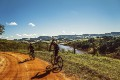
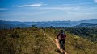

Each tour group stops for lunch at the pinnacle of the trail. Tour guides share local history and tales of the trail while you ride and dine.
Grassy Mountain Loop

Sixteen miles of the purest Montana Big Sky Country. Gaining 2600 feet in elevation, to one of the greatest views in the Bozeman area.
Difficulty: Intermediate
Length: 16 Miles
Cost: $60/Rider
Trailhead Address:
Brackett Creek Trail
Bozeman, MT 59715
Bangtail Divide

Our longest local tour, riding 24-miles, and gaining almost a mile in elevation, to one of the greatest views in the Bozeman area.
Difficulty: Intermediate
Length: 24 Miles
Cost: $80/Rider
Trailhead Address:
2 Stone Creek Rd
Bozeman, MT 59715
Adventure travel
Adventure travel is a type of tourism, involving exploration or travel with perceived risk, and potentially requiring specialized skills and physical exertion.